The Access Visibility Gap
Without complete visibility, every downstream activity operates on incomplete information
Can’t Automate
What you can’t see
- Provisioning workflows skip unknown apps
- Deprovisioning can’t revoke shadow IT
- Lifecycle automation stops at the visibility boundary